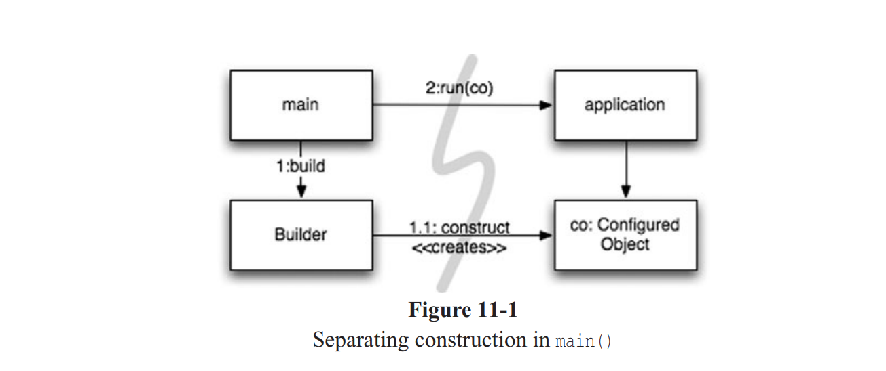

سیستم ها

پیچیدگی کشنده است. روحیهی توسعهدهندگان را از بین میبرد و فرآیند طراحی، ساخت و آزمایش محصولات را دشوار میکند.
چگونه یک شهر میسازید؟
آیا میتونید همه جزئیات رو خودتون مدیریت کنید؟ احتمالاً نه. حتی مدیریت یک شهر موجود هم برای یک نفر خیلی زیاده. با این حال، شهرها (اغلب اوقات) کار میکنن. چرا؟ چون تیمهایی از افراد دارن که بخشهای مختلف شهر رو مدیریت میکنن — سیستمهای آبرسانی، برق، ترافیک، پلیس، مقررات ساختوساز و غیره. بعضیها مسئول دید کلان هستن و بعضی دیگه روی جزئیات تمرکز دارن.
شهرها همچنین به این دلیل کار میکنن که سطوح مناسبی از انتزاع و ماژولار بودن رو در طول زمان توسعه دادن؛ این موضوع به افراد و اجزای سیستمها اجازه میده حتی بدون درک کامل تصویر بزرگ، مؤثر عمل کنن.
تیمهای نرمافزاری هم معمولاً به همین صورت سازماندهی میشن، ولی سیستمهایی که روشون کار میکنن معمولاً همون جداسازی دغدغهها و سطوح انتزاع رو ندارن. کد تمیز کمک میکنه تا این جداسازی در سطوح پایینتر انتزاع محقق بشه. در این فصل میخوایم بررسی کنیم که چطور میشه در سطوح بالاتر انتزاع — یعنی در سطح سیستم — همچنان کد تمیز داشت.
ساخت سیستم رو از استفاده از اون جدا کنید
اول، به این فکر کنید که ساختن یک سیستم با استفاده از اون سیستم، دو فرآیند کاملاً متفاوت هستن. مثلاً هماکنون که این متن رو مینویسم، دارم یک هتل در حال ساخت رو از پنجره در شیکاگو میبینم. الان فقط یه جعبه بتنی سادهست که یه جرثقیل و آسانسور بهش وصله. همهی آدمهایی که اونجا کار میکنن کلاه ایمنی و لباس کار دارن. اما تا یکی دو سال دیگه، اون هتل تکمیل میشه، جرثقیل و آسانسور برداشته میشن، نما شیشهای میشه و با رنگهای جذاب تزئین میشه. آدمهایی هم که اونجا کار یا اقامت میکنن، ظاهرشون خیلی متفاوت خواهد بود.
در سیستمهای نرمافزاری هم باید فرآیند راهاندازی اولیه — جایی که اشیاء ساخته میشن و وابستگیها به هم متصل میشن — از منطق زمان اجرا که پس از راهاندازی فعال میشه، جدا بشه.
راهاندازی یکی از دغدغههاییست که هر اپلیکیشنی باید بهش بپردازه، و این اولین موضوعیه که در این فصل بررسیش میکنیم. جداسازی دغدغهها یکی از قدیمیترین و مهمترین اصول طراحی در این حرفهست.
متأسفانه، اکثر برنامهها این دغدغه رو جدا نمیکنن. کد مربوط به راهاندازی بهصورت پراکنده و ترکیبشده با منطق زمان اجرا نوشته میشه. یک مثال رایج:
public Service getService() {
if (service == null)
service = new MyServiceImpl(...); // Good enough default for most cases?
return service;
}
این همون الگوی LAZY INITIALIZATION/EVALUATION هست
این الگو مزایای زیادی داره — مثلاً تا وقتی که واقعاً به یه شیء نیاز نداریم، سربار ساختش رو متحمل نمیشیم، در نتیجه زمان شروع اپ سریعتر میشه. همچنین تضمین میکنیم که null برگردونده نشه.
اما حالا یه وابستگی سختکد شده به MyServiceImpl و چیزایی که سازندهاش نیاز داره (که در اینجا حذف شده) داریم. حتی اگه در زمان اجرا هیچوقت از این شیء استفاده نکنیم، باز هم باید اون وابستگیها رو در زمان کامپایل برطرف کنیم!
در تست هم ممکنه به مشکل بخوریم. اگه MyServiceImpl یه شیء سنگین باشه، باید مطمئن شیم که در زمان تست یه TEST DOUBLE یا MOCK OBJECT مناسب بهش اختصاص داده شده، قبل از اینکه متد مربوطه اجرا بشه. چون منطق ساخت شیء با منطق اجرای عادی ترکیب شده، باید همه مسیرهای اجرای ممکن رو تست کنیم (مثل تست null). این یعنی متد داره بیش از یک مسئولیت انجام میده، و ما به شکل جزئی اصل تکوظیفگی (Single Responsibility Principle) رو نقض کردیم.
شاید بدترین بخش ماجرا این باشه که ما نمیدونیم MyServiceImpl همیشه گزینهی مناسبی هست یا نه. چرا این کلاس باید از زمینهی کلی سیستم باخبر باشه؟ اصلاً مگه میشه همیشه بدونیم کدوم شیء در هر زمینهی خاص درسته؟ یه نوع خاص میتونه همیشه برای همهی موقعیتها مناسب باشه؟
یک بار استفاده از LAZY INITIALIZATION مشکل خاصی ایجاد نمیکنه. ولی معمولاً موارد زیادی از این الگوهای کوچک در برنامه وجود دارن، و در نتیجه استراتژی کلی راهاندازی سیستم — اگه اصلاً وجود داشته باشه — پراکنده و تکراری میشه.
اگه واقعاً بخوایم سیستمهای منسجم و قوی بسازیم، نباید بذاریم این الگوهای کوچک و راحت باعث تخریب ساختار ماژولار بشن. فرآیند ساخت و سیمکشی اشیاء هم از این قاعده مستثنا نیست. باید این فرآیند رو جدا از منطق زمان اجرا ماژولار کنیم و استراتژی سراسری و یکپارچهای برای حل وابستگیها داشته باشیم.
جداسازی main
یکی از روشهای جداسازی ساخت از استفاده اینه که تمام منطق ساخت رو به main یا ماژولهایی که توسط main فراخوانی میشن منتقل کنیم، و مابقی سیستم رو طوری طراحی کنیم که فرض کنه همهی اشیاء از قبل ساخته و سیمکشی شدن. (به شکل ۱۱-۱ نگاه کنید.)
جریان کنترل خیلی قابل پیگیری میشه. تابع main اشیاء لازم رو میسازه و به اپلیکیشن پاس میده، و اپ فقط از اونها استفاده میکنه. به جهت پیکانهای وابستگی که از main به سمت اپ میرن توجه کنید — همهشون از main دور میشن. یعنی اپلیکیشن از main و فرآیند ساخت بیاطلاعه و فقط فرض میکنه که همه چیز درست ساخته شده.
کارخانهها (Factories)
گاهی لازمه اپلیکیشن خودش مسئول زمان ساخت یک شیء باشه. مثلاً در سیستم پردازش سفارش، اپ باید LineItem ها رو بسازه تا به یک Order اضافه کنه.

در این مواقع میشه از الگوی ABSTRACT FACTORY استفاده کرد تا کنترل زمان ساخت رو به اپ بدیم، ولی جزئیات ساخت در خود اپلیکیشن نباشه. (Figure 11-2)

باز هم توجه کنید که وابستگیها همه از main به سمت OrderProcessing میرن. یعنی اپلیکیشن از جزئیات ساخت LineItem جدا شده. اون جزئیات در LineItemFactoryImplementation هست که در طرف main قرار داره. با این حال، اپلیکیشن کنترل کامل داره روی زمان ساخت LineItem ها و میتونه آرگومانهای خاص خودش رو هم به سازنده بده.
تزریق وابستگی (Dependency Injection)
یک مکانیسم قدرتمند برای جدا کردن ساخت از استفاده، تزریق وابستگی (DI) هست، که کاربردی از Inversion of Control (IoC) در مدیریت وابستگیهاست.
IoC مسئولیتهای جانبی رو از یک شیء به شیء دیگهای منتقل میکنه که مخصوص اون کار طراحی شده، و این کار اصل تکوظیفگی رو حمایت میکنه. در زمینهی مدیریت وابستگی، یک شیء نباید خودش وابستگیهاش رو بسازه، بلکه باید این مسئولیت رو به مکانیزمی «معتبر» بسپره، یعنی کنترل رو معکوس کنه.
چون راهاندازی یک دغدغهی سراسریست، معمولاً این مکانیزم معتبر یا تابع main خواهد بود یا یک container مخصوص.
مثلاً JNDI یک پیادهسازی ناقص از DI هست، چون شیء میره سراغ یک سرور دایرکتوری و ازش یه سرویس میخواد:
MyService myService = (MyService)(jndiContext.lookup(“NameOfMyService”));
این شیء نمیدونه دقیقاً چه شیئی برمیگرده (تا وقتی که اینترفیس مناسب رو پیادهسازی کنه)، ولی هنوز خودش به صورت فعال وابستگی رو دریافت میکنه.
در مقابل، در DI واقعی، کلاس هیچ اقدامی برای دریافت وابستگیها انجام نمیده. فقط متدهای setter یا آرگومانهای سازندهای رو ارائه میده که در فرآیند ساخت توسط DI container استفاده میشن. این container اشیاء مورد نیاز رو ایجاد میکنه و با استفاده از سازنده یا setterها اونها رو به هم وصل میکنه. اینکه دقیقاً چه اشیائی استفاده بشن، در یک فایل پیکربندی یا ماژول ساخت مشخص میشه.
در Java، معروفترین DI container فریمورک Spring هست. شما تعریف میکنید که کدوم اشیاء به هم وصل بشن، معمولاً با استفاده از XML، و بعد در کد جاوا اون اشیاء رو با اسم میگیرید.
مقیاسپذیری (Scaling Up)
شهرها از روستاها به وجود میان، و روستاها هم از سکونتگاههای اولیه. در ابتدا، خیابونها باریکن و بعضاً وجود ندارن، بعد آسفالت میشن، و با گذشت زمان عریضتر میشن. ساختمانهای کوچک و زمینهای خالی جای خودشون رو به سازههای بزرگتر میدن، که بعضی از اونها بعداً با آسمونخراشها جایگزین میشن.
در ابتدا هیچکدوم از خدماتی مثل برق، آب، فاضلاب و اینترنت (آخ!) وجود ندارن. این خدمات زمانی اضافه میشن که جمعیت و تراکم ساختمانها افزایش پیدا میکنه.
این رشد بدون دردسر نیست. چند بار پیش اومده که تو یه پروژه به اصطلاح "بهبود" جاده، پشت سر هم تو ترافیک گیر کردی و با خودت گفتی: «چرا از اول جاده رو به اندازه کافی عریض نساختن؟»
ولی واقعاً نمیشد از اول این کارو کرد. چه کسی میتونه هزینهی ساخت یه بزرگراه شش لاینه از وسط یه شهر کوچیک رو توجیه کنه، اونم صرفاً با این فرض که یه روزی رشد میکنه؟ اصلاً کی حاضر میشه چنین جادهای وسط شهرش باشه؟
ایدهی اینکه از همون اول سیستم رو "درست بسازیم" یه افسانهست. به جای اون، باید فقط ویژگیهایی که امروز نیاز داریم رو پیادهسازی کنیم، و بعد سیستم رو بازآرایی (refactor) و توسعه بدیم تا نیازهای فردا رو برآورده کنه. این دقیقاً جوهرهی توسعهی چابک تکرارشونده و افزایشیست. تستمحور بودن، بازآرایی و کد تمیز همگی این روند رو در سطح کد پشتیبانی میکنن.
ولی در سطح سیستم چی؟ آیا معماری سیستم به برنامهریزی اولیه نیاز نداره؟ مگه میشه معماری از ساده به پیچیده رشد کنه؟
برخلاف سیستمهای فیزیکی، سیستمهای نرمافزاری منحصر به فرد هستن. اگه جداسازی دغدغهها (Separation of Concerns) رو به درستی رعایت کنیم، معماری اونها میتونه بهصورت تدریجی رشد کنه.
ماهیّت موقتی و انعطافپذیر نرمافزار این امکان رو فراهم میکنه. ولی بیاید اول یه ضدالگو رو بررسی کنیم؛ معماریای که دغدغهها رو بهدرستی جدا نکرده.
ضدالگوی EJB
معماری EJB1 و EJB2 نتونست دغدغهها رو بهدرستی جدا کنه، و همین باعث شد رشد طبیعی سیستم بهشدت محدود بشه. فرض کنید یه کلاس Bank داریم که با استفاده از Entity Bean پیادهسازی شده. Entity Bean یعنی یه نمایش در حافظه از دادهی رابطهای — معادل یک ردیف در جدول دیتابیس.
اول باید یه Interface تعریف میکردید — یا Local (برای اجرای درون JVM) یا Remote (در JVM جداگانه). مثال زیر یک اینترفیس Local رو نشون میده:
package com.example.banking;
import java.util.Collections;
import javax.ejb.*;
public interface BankLocal extends java.ejb.EJBLocalObject {
String getStreetAddr1() throws EJBException;
String getStreetAddr2() throws EJBException;
String getCity() throws EJBException;
String getState() throws EJBException;
String getZipCode() throws EJBException;
void setStreetAddr1(String street1) throws EJBException;
void setStreetAddr2(String street2) throws EJBException;
void setCity(String city) throws EJBException;
void setState(String state) throws EJBException;
void setZipCode(String zip) throws EJBException;
Collection getAccounts() throws EJBException;
void setAccounts(Collection accounts) throws EJBException;
void addAccount(AccountDTO accountDTO) throws EJBException;
}
چند ویژگی برای آدرس بانک و لیستی از حسابها که توسط Account EJB جداگانهای مدیریت میشن رو تعریف کردیم. پیادهسازی کلاس Bank هم در لیستینگ بعدی اومده.
package com.example.banking;
import java.util.Collections;
import javax.ejb.*;
public abstract class Bank implements javax.ejb.EntityBean {
// Business logic...
public abstract String getStreetAddr1();
public abstract String getStreetAddr2();
public abstract String getCity();
public abstract String getState();
public abstract String getZipCode();
public abstract void setStreetAddr1(String street1);
public abstract void setStreetAddr2(String street2);
public abstract void setCity(String city);
public abstract void setState(String state);
public abstract void setZipCode(String zip);
public abstract Collection getAccounts();
public abstract void setAccounts(Collection accounts);
public void addAccount(AccountDTO accountDTO) {
InitialContext context = new InitialContext();
AccountHomeLocal accountHome = context.lookup("AccountHomeLocal");
AccountLocal account = accountHome.create(accountDTO);
Collection accounts = getAccounts();
accounts.add(account);
}
// EJB container logic
public abstract void setId(Integer id);
public abstract Integer getId();
public Integer ejbCreate(Integer id) {
...
}
public void ejbPostCreate(Integer id) {
...
}
// The rest had to be implemented but were usually empty:
public void setEntityContext(EntityContext ctx) {}
public void unsetEntityContext() {}
public void ejbActivate() {}
public void ejbPassivate() {}
public void ejbLoad() {}
public void ejbStore() {}
public void ejbRemove() {}
}
علاوه بر اینها باید یه Interface دیگه به نام LocalHome مینوشتید، که نقش Factory داشت. همچنین متدهای Finder برای کوئریهای سفارشی لازم بودن.
در نهایت، باید یک یا چند فایل XML برای تنظیمات Deployment مینوشتید — مثل نگاشت شیء به جدول، رفتار تراکنشی، محدودیتهای امنیتی و موارد دیگه.
کوپلینگ بالا = تستپذیری پایین
منطق تجاری سیستم بهشدت به Container وابسته بود. باید از کلاسهایی که Container تعریف میکرد ارثبری میکردید و کلی متد چرخهی عمر مینوشتید.
این کوپلینگ سنگین باعث میشد تستنویسی ایزوله غیرممکن بشه. یا باید Container رو Mock میکردید — که سخته — یا وقت زیادی صرف Deploy کردن تستها روی سرور واقعی میکردید. بهخاطر این کوپلینگ، امکان استفادهی مجدد از این کدها خارج از معماری EJB2 عملاً صفر بود.
حتی اصول شیءگرایی هم زیر سؤال میرفتن. یه Bean نمیتونست از یه Bean دیگه ارثبری کنه. برای مثال، اضافه کردن یه حساب جدید نیاز به تعریف یک DTO داشت — یه کلاس با داده و بدون منطق — که تبدیل به کد تکراری و ساختارهای زائد میشد.
دغدغههای مشترک (Cross-Cutting Concerns)
با این حال، EJB2 توی جدا کردن بعضی دغدغهها مثل تراکنش، امنیت، و برخی جزئیات پایداری، تا حدی موفق بود. این موارد رو میشد توی فایلهای Deployment Descriptor تعریف کرد، مستقل از کد منبع.
دغدغههایی مثل پایداری (Persistence) معمولاً مرزهای طبیعی آبجکتها رو در یک دامنه قطع میکنن. مثلاً میخوای همهی آبجکتهات از یه دیتابیس خاص استفاده کنن، طبق یک استاندارد خاص برای نامگذاری جدولها و ستونها، و با رفتار تراکنشی مشابه.
در تئوری، میشه پایداری رو بهصورت ماژولار در نظر گرفت. ولی در عمل، مجبوری کد مشابه رو توی خیلی از کلاسها تکرار کنی. به این میگیم دغدغهی مشترک (Cross-Cutting Concern).
EJB یه جورایی به چیزی شبیه Aspect-Oriented Programming (AOP) رسیده بود — راهکاری عمومی برای بازگردوندن ماژولار بودن به دغدغههای مشترک.
AOP در جاوا
در AOP، ساختارهایی به نام Aspect مشخص میکنن که کد کجا باید با رفتار خاصی تغییر کنه. این کار بهصورت declarative انجام میشه.
مثلاً در بحث پایداری، اعلام میکنی کدوم آبجکتها یا ویژگیها باید Persist بشن، و وظیفهی این کار به فریمورک پایداری واگذار میشه. AOP این تغییرات رو بهصورت غیرمهاجم (non-invasive) انجام میده.
پراکسیها در جاوا
Java Proxy برای شرایط ساده مناسبه — مثلاً وقتی میخوای یه متد رو Wrap کنی. ولی پراکسیهای داینامیک فقط با Interface کار میکنن. برای کلاسها باید از کتابخونههایی مثل CGLIB یا Javassist استفاده کنی.
// Bank.java (suppressing package names...)
// The “Plain Old Java Object” (POJO) implementing the abstraction.
public class BankImpl implements Bank {
private List<Account> accounts;
public Collection<Account> getAccounts() {
return accounts;
}
public void setAccounts(Collection<Account> accounts) {
this.accounts = new ArrayList<Account>();
for (Account account : accounts) {
this.accounts.add(account);
}
}
}
// BankProxyHandler.java
import java.lang.reflect.*;
import java.util.*;
import java.utils.*;
// “InvocationHandler” required by the proxy API.
public class BankProxyHandler implements InvocationHandler {
private Bank bank;
public BankHandler(Bank bank) {
this.bank = bank;
}
// Method defined in InvocationHandler
public Object invoke(Object proxy, Method method, Object[] args)
throws Throwable {
String methodName = method.getName();
if (methodName.equals("getAccounts")) {
bank.setAccounts(getAccountsFromDatabase());
return bank.getAccounts();
} else if (methodName.equals("setAccounts")) {
bank.setAccounts((Collection<Account>) args[0]);
setAccountsToDatabase(bank.getAccounts());
return null;
} else {
...
}
}
// Lots of details here:
protected Collection<Account> getAccountsFromDatabase() {
...
}
protected void setAccountsToDatabase(Collection<Account> accounts) {
...
}
}
// Somewhere else...
Bank bank = (Bank) Proxy.newProxyInstance(Bank.class.getClassLoader(),
new Class[] {Bank.class}, new BankProxyHandler(new BankImpl()));
در مثال Bank، یک Interface تعریف میکنیم، یه POJO که منطق رو پیاده میکنه، و یه Handler که با Reflection متدها رو فراخوانی میکنه. این کد حتی توی حالت ساده هم زیاد و پیچیدهست. این پیچیدگی و حجم کد باعث میشن که کد تمیز سختتر حاصل بشه.
همچنین پراکسیها مکانیزم مناسبی برای تعریف "نقاط اجرای سیستم" ندارن — چیزی که برای AOP واقعی لازمه.
فریمورکهای AOP مبتنی بر جاوای خالص
خوشبختانه بیشتر این کدهای تکراری توسط ابزارها تولید میشن. مثلاً Spring AOP و JBoss AOP از پراکسیها برای پیادهسازی Aspect استفاده میکنن.
در Spring، منطق بیزینسی رو بهصورت POJO مینویسی — کلاسهایی که فقط به دامنهی خودشون وابستهان. نه به فریمورک وابستهان، نه به API خاص. این یعنی سادهتر و تستپذیرتر.
نیازهای زیرساختی (مثل پایداری، تراکنش، امنیت، کش، failover و ...) بهصورت declarative با XML یا API مشخص میشن. در واقع داری Aspectهای Spring یا JBoss رو تعریف میکنی، و این فریمورک خودش از پراکسی یا Bytecode Manipulation استفاده میکنه — بدون اینکه تو درگیرش بشی.
این پیکربندیها به DI Container گفته میشن که اشیاء اصلی رو میسازه و به هم متصل میکنه.
مثال از فایل پیکربندی Spring 2.5:
<beans>...
<bean id="appDataSource"
class="org.apache.commons.dbcp.BasicDataSource"
destroy-method="close"
p:driverClassName="com.mysql.jdbc.Driver"
p:url="jdbc:mysql://localhost:3306/mydb"
p:username="me"/>
<bean id="bankDataAccessObject"
class="com.example.banking.persistence.BankDataAccessObject"
p:dataSource-ref="appDataSource"/>
<bean id="bank" class="com.example.banking.model.Bank"
p:dataAccessObject-ref="bankDataAccessObject"/> ...
</beans>
هر bean مانند بخشی از یک “عروسک روسی تو در تو” است، با یک شیء دامنهای برای بانک که توسط یک شیء دسترسی به داده (DAO) پروکسی شده (یا بستهبندی شده) است؛ و این شیء نیز خودش توسط یک منبع داده JDBC پروکسی میشود. (See Figure 11-3)

کلاینت تصور میکند که متد getAccounts() را روی یک شیء Bank فراخوانی میکند، اما در واقع دارد با بیرونیترین آبجکت از مجموعهای از اشیای تو در توی Decorator صحبت میکند که رفتار پایهی POJO مربوط به Bank را گسترش میدهند. ما میتوانیم Decoratorهای دیگری برای تراکنشها، کشکردن (caching)، و غیره اضافه کنیم.
در اپلیکیشن، تنها چند خط کد کافیست تا از DI Container بخواهیم که اشیای سطحبالای سیستم را بر اساس فایل XML پیکربندی به ما بدهد.
XmlBeanFactory bf =
new XmlBeanFactory(new ClassPathResource("app.xml", getClass()));
Bank bank = (Bank) bf.getBean("bank");
از آنجا که تنها چند خط کد وابسته به Spring نیاز است، اپلیکیشن تقریباً به طور کامل از Spring جدا شده است، و این مسأله مشکلات coupling شدید سیستمهایی مانند EJB2 را از بین میبرد.
اگرچه XML میتواند پرحجم و سختخوان باشد، اما “سیاستها”ی تعریفشده در این فایلهای پیکربندی، سادهتر از منطق پیچیدهی پروکسی و Aspectهایی هستند که در پشتصحنه بهصورت خودکار ساخته میشوند و دیده نمیشوند. این نوع معماری آنقدر قوی و جذاب است که فریمورکهایی مانند Spring باعث بازنگری کامل استاندارد EJB در نسخه 3 شدند. EJB3 بهطور گسترده مدل Spring را در پشتیبانی اعلامی (declarative) از دغدغههای برشعرضی (cross-cutting concerns) با استفاده از فایلهای XML یا انوتیشنهای جاوا 5 دنبال میکند.
لیست 11-5، شیء Bank ما را نشان میدهد که با استفاده از EJB3 بازنویسی شده است.
package com.example.banking.model;
import java.util.ArrayList;
import java.util.Collection;
import javax.persistence.*;
@Entity
@Table(name = "BANKS")
public class Bank implements java.io.Serializable {
@Id @GeneratedValue(strategy = GenerationType.AUTO) private int id;
@Embeddable // An object “inlined” in Bank’s DB row
public class Address {
protected String streetAddr1;
protected String streetAddr2;
protected String city;
protected String state;
protected String zipCode;
}
@Embedded private Address address;
@OneToMany(
cascade = CascadeType.ALL, fetch = FetchType.EAGER, mappedBy = "bank")
private Collection<Account> accounts = new ArrayList<Account>();
public int getId() {
return id;
}
public void setId(int id) {
this.id = id;
}
public void addAccount(Account account) {
account.setBank(this);
accounts.add(account);
}
public Collection<Account> getAccounts() {
return accounts;
}
public void setAccounts(Collection<Account> accounts) {
this.accounts = accounts;
}
}
این کد بسیار تمیزتر از نسخهی EJB2 است. برخی جزئیات مرتبط با موجودیت (entity) هنوز در قالب انوتیشنها وجود دارند. اما چون هیچیک از این اطلاعات خارج از انوتیشنها نیستند، کد تمیز، واضح، و بنابراین، آسان برای تستنویسی، نگهداری و توسعه است.
بخشی یا تمام اطلاعات persistence موجود در انوتیشنها میتواند به فایلهای XML انتقال یابد، اگر تیم بخواهد یک POJO کاملاً خالص داشته باشد. اگر نگاشت persistence تغییرات زیادی نداشته باشد، بسیاری از تیمها ترجیح میدهند انوتیشنها را نگه دارند، زیرا با وجود آنها، دیگر معایب آزاردهندهی تهاجمی بودن EJB2 وجود ندارد.
AspectJ Aspects
در نهایت، کاملترین ابزار برای جداسازی دغدغهها (concerns) از طریق Aspects، زبان AspectJ است؛ یک افزونه برای جاوا که پشتیبانی "درجهیک" از Aspects را بهعنوان ساختارهای مدولار ارائه میدهد. روشهای جاوای خالص ارائهشده توسط Spring AOP و JBoss AOP برای 80 تا 90 درصد سناریوهایی که Aspects مفیدند، کافی هستند. با این حال، AspectJ مجموعهای بسیار غنی و قدرتمند برای جداسازی دغدغهها ارائه میدهد.
عیب AspectJ این است که نیاز به ابزارها و مفاهیم زبانی جدیدی دارد و تیم باید الگوهای استفادهی تازهای یاد بگیرد.
اما بخشی از این مشکل با معرفی نسخهی انوتیشنی AspectJ حل شده است؛ جایی که از انوتیشنهای جاوا 5 برای تعریف Aspects با کد خالص جاوا استفاده میشود. همچنین، فریمورک Spring ویژگیهایی دارد که استفاده از این Aspects مبتنی بر انوتیشن را برای تیمهایی با تجربهی محدود در AspectJ آسانتر میکند.
بحث کامل درباره AspectJ فراتر از محدوده این کتاب است. برای اطلاعات بیشتر، به منابع [AspectJ]، [Colyer]، و [Spring] مراجعه کنید.
تستمحور کردن معماری سیستم
قدرت جداسازی دغدغهها از طریق مکانیسمهای Aspect مانند را نمیتوان بیش از حد توصیف کرد. اگر بتوانید منطق دامنهی اپلیکیشنتان را با استفاده از POJOها بنویسید، بدون وابستگی به معماری در سطح کد، آنگاه واقعاً میتوانید معماریتان را تستمحور توسعه دهید.
میتوانید آن را از ساده به پیچیدهتر تکامل دهید، بسته به نیاز، و فناوریهای جدید را در صورت نیاز وارد کنید. نیازی نیست یک طراحی بزرگ اولیه (Big Design Up Front یا BDUF) داشته باشید. در واقع، BDUF میتواند مضر باشد چون جلوی انطباق با تغییر را میگیرد—هم به خاطر مقاومت روانی در برابر کنار گذاشتن تلاشهای قبلی و هم به دلیل تأثیرگذاری انتخابهای معماری اولیه بر نحوهی فکر کردن به طراحی در ادامه.
معماران ساختمان ناچارند BDUF انجام دهند چون ایجاد تغییرات اساسی معماری در سازهی فیزیکی پس از شروع ساخت بسیار دشوار است.
هرچند نرمافزار فیزیک خاص خودش را دارد، اما ایجاد تغییرات اساسی در آن از نظر اقتصادی امکانپذیر است—اگر ساختار نرمافزار بهخوبی دغدغهها را از هم جدا کرده باشد.
این بدان معناست که ما میتوانیم یک پروژه نرمافزاری را با معماری ساده اما جداشده (decoupled) آغاز کنیم، داستانهای کاربری را سریع پیادهسازی کنیم و سپس زیرساختهای بیشتر را به تدریج اضافه کنیم. برخی از بزرگترین وبسایتهای دنیا به دستاوردهای فوقالعادهای در پایداری و کارایی دست یافتهاند، با استفاده از caching پیشرفته، امنیت، مجازیسازی و غیره—همه اینها بهصورت انعطافپذیر و کارآمد، به لطف طراحیهایی که بهدرستی و به شکل ساده در هر سطح از انتزاع انجام شدهاند.
البته این به این معنا نیست که بدون جهت وارد پروژه شویم. ما باید انتظارات کلی نسبت به دامنه، اهداف، و برنامه زمانی پروژه داشته باشیم، و همچنین ساختار کلی سیستم آینده را بدانیم. اما باید توانایی تغییر مسیر در مواجهه با شرایط در حال تغییر را نیز حفظ کنیم.
معماری اولیهی EJB تنها یکی از چندین API معروف است که بیش از حد مهندسی شدهاند و جداسازی دغدغهها را به خطر میاندازند. حتی APIهای خوشطراحی هم وقتی واقعاً نیاز نیستند، میتوانند بیش از حد باشند. یک API خوب باید بیشتر اوقات از دید خارج شود تا تیم بیشتر تلاش خلاقانهاش را صرف پیادهسازی داستانهای کاربری کند. اگر چنین نباشد، محدودیتهای معماری باعث میشوند ارائهی سریع ارزش به مشتری با مشکل مواجه شود.
خلاصهای از این بحث طولانی:
یک معماری سیستم بهینه، شامل دامنههای ماژولار از دغدغههاست که هرکدام با اشیای سادهی جاوا (یا دیگر زبانها) پیادهسازی شدهاند. این دامنهها از طریق Aspects یا ابزارهای مشابه، و بهصورت غیرتهاجمی به یکدیگر متصل میشوند. این معماری نیز مانند کد میتواند تستمحور باشد.
تصمیمگیری بهینه
مدولارسازی و جداسازی دغدغهها، مدیریت غیرمتمرکز و تصمیمگیری را ممکن میسازد. در یک سیستم بزرگ، چه یک شهر باشد و چه یک پروژه نرمافزاری، هیچکس بهتنهایی نمیتواند همهی تصمیمها را بگیرد.
ما همگی میدانیم که واگذاری مسئولیت به افراد متخصص بهترین کار است. اما اغلب فراموش میکنیم که به تعویق انداختن تصمیمها تا آخرین لحظه ممکن نیز بهترین کار است.
این کار تنبلی یا بیمسئولیتی نیست—بلکه اجازه میدهد تا تصمیمها را با اطلاعات کاملتر و آگاهانهتری بگیریم. یک تصمیم زودهنگام، تصمیمی است که با دانش ناقص گرفته میشود. اگر خیلی زود تصمیم بگیریم، بازخورد مشتری، تأمل ذهنی درباره پروژه، و تجربه عملیمان از پیادهسازیها را از دست دادهایم.
معماری POJOیی که دغدغهها را مدولار کرده باشد، این چابکی را فراهم میکند که تصمیمهای بهینه، درست بهموقع و با آخرین دانش ممکن گرفته شوند—و پیچیدگی تصمیمگیریها نیز کاهش یابد.
استفاده هوشمندانه از استانداردها، زمانی که ارزش آشکاری دارند
فرایند ساختوساز شگفتانگیز است، هم بهخاطر سرعت اجرای پروژهها (حتی در زمستان) و هم به خاطر طراحیهای خارقالعادهای که با فناوریهای امروز ممکن شدهاند. این صنعت بالغ، با اجزای بهینهشده، روشهای پیشرفته و استانداردهایی که طی قرنها تحت فشار تکامل یافتهاند، به اینجا رسیده است.
بسیاری از تیمها صرفاً به این دلیل که EJB2 یک استاندارد بود، از آن استفاده کردند—حتی زمانی که طراحیهای سبکتر و سادهتر کفایت میکرد. من تیمهایی را دیدهام که به استانداردهایی که بیشازحد تبلیغ شدهاند، وسواس پیدا کردهاند و تمرکزشان را از ارائهی ارزش به مشتری از دست دادهاند.
استانداردها استفاده مجدد از ایدهها و اجزا، جذب افراد با تجربه مرتبط، کپسوله کردن ایدههای خوب و اتصال اجزا را آسان میکنند. اما فرایند ایجاد استانداردها گاهی آنقدر کند است که صنعت نمیتواند منتظر بماند؛ بعضی از استانداردها هم از نیازهای واقعی کاربرانشان فاصله میگیرند.
سیستمها به زبانهای خاص دامنه نیاز دارند
در ساختوساز، مانند بسیاری از حوزهها، زبان غنیای از واژگان، اصطلاحات، و الگوها شکل گرفته که اطلاعات ضروری را به شکلی واضح و مختصر منتقل میکند. در نرمافزار، اخیراً علاقهمندی تازهای به ایجاد زبانهای خاص دامنه (DSL) پدید آمده است؛ زبانهای اسکریپتی کوچک یا APIهایی در زبانهای استاندارد که اجازه میدهند کد شبیه نثر ساختیافتهای نوشته شود که یک متخصص دامنه نیز آن را خواهد نوشت.
یک DSL خوب شکاف ارتباطی بین مفاهیم دامنه و کدی که آن را پیادهسازی میکند را به حداقل میرساند؛ درست مانند آنچه روشهای چابک در ارتباطات تیمی و تعامل با ذینفعان پروژه انجام میدهند. اگر منطق دامنه را به همان زبان متخصص دامنه پیادهسازی کنید، خطر ترجمه نادرست دامنه به پیادهسازی کمتر میشود.
DSLها زمانی که بهدرستی استفاده شوند، سطح انتزاع را فراتر از الگوهای کدنویسی و طراحی میبرند. آنها به توسعهدهنده اجازه میدهند هدف کد را در سطح مناسب از انتزاع نشان دهد.
DSL ها این امکان را فراهم میکنند که تمام سطوح انتزاع و همه دامنههای اپلیکیشن، با POJOها بیان شوند—از سیاستهای سطح بالا تا جزئیات سطح پایین.
نتیجهگیری
سیستمها نیز باید تمیز باشند. معماری تهاجمی، منطق دامنه را تحت تأثیر قرار میدهد و چابکی را مختل میکند. وقتی منطق دامنه پنهان شود، کیفیت کاهش مییابد، باگها پنهان میمانند، و پیادهسازی داستانها سختتر میشود. اگر چابکی از بین برود، بهرهوری پایین میآید و فواید TDD نیز از بین میروند.
در تمام سطوح انتزاع، هدف باید واضح باشد—و این فقط زمانی ممکن است که از POJOها استفاده کنیم و دغدغههای پیادهسازی را با ابزارهای Aspect مانند، بهصورت غیرتهاجمی وارد کنیم.
چه در حال طراحی یک سیستم باشید و چه یک ماژول کوچک، هرگز فراموش نکنید از سادهترین چیزی که میتواند کار را انجام دهد، استفاده کنید.